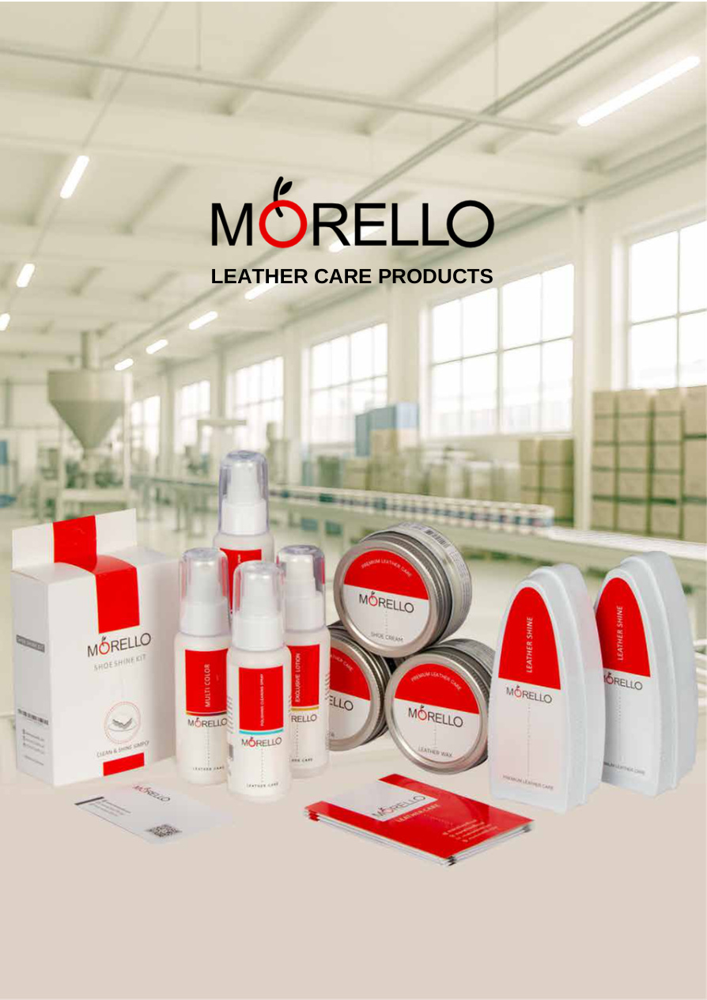

Не начинать с большой закупки
Российский рынок активный, но конкурентный. Без цены, документов, каналов и проверки спроса импортная партия превращается в риск остатков.
Oxin / Croco / Morello
Презентация для обсуждения моделей запуска: от B2B-разведки и OEM до маркетплейсов, дистрибуции, представительства и долгосрочного производства.
Стартовая логика
Российский рынок активный, но конкурентный. Без цены, документов, каналов и проверки спроса импортная партия превращается в риск остатков.
На старте разумнее позиция market-entry partner: стратегия, B2B-контакты, партнерская разведка, образцы и пилотные сделки.
Производство, OEM/private label и Morello расширяют вход: можно продавать бренд, производственную мощность или отдельную категорию ухода.
Market intelligence
Дополнительный анализ показывает: для Oxin/Croco сильнее не массовый запуск бренда с первого дня, а комбинация B2B, OEM, точечного marketplace-теста и отдельной проверки Morello.
зафиксировано в розничных продажах по ГИС МТ.
продано за квартал; рынок остается объемным.
доля одежды и обуви в онлайн-продажах РФ.
обувь требует “Честный знак” до ввода в оборот.
Обувь как брендовый импорт возможна, но требует лучшей экономики, размерной сетки, маркировки и контроля возвратов.
OEM/private label и кожгалантерея дают более короткий B2B-путь, потому что российский клиент покупает не новый бренд, а производственную возможность.
Маркетплейсы нужны как тест данных: карточки, цена, отзывы, размеры, возвраты, а не как массовая ставка на первом шаге.
Экономика
Прогноз ориентировочный: цифры нужны для первого разговора и выбора сценария, а не для инвестиционного решения без прайса, ТН ВЭД, логистики и документов.
Scenario
Gross margin / fee minus entry budget, before tax and financing cost.
Дорожная карта
Выбрать модель: бренд, OEM, дистрибуция, marketplace-тест или партнерство.
Прайс, SKU, MOQ, фото, материалы, условия, презентация RU/EN/FA.
Проверка ТН ВЭД, сертификации, маркировки, логистики, НДС и пошлин.
20-40 предметных контактов: сети, дистрибьюторы, OEM-клиенты, сервисы.
LOI, тестовый B2B-заказ, limited marketplace-test или OEM-проект.
Если экономика сходится, обсуждать эксклюзивность, импорт или локальное присутствие.
Marketplace strategy
Для обуви и fashion маркетплейсы проверяют спрос, карточки, цену, размерную сетку и возвраты. Массовый запуск до B2B-валидации опасен: комиссии, реклама, хранение и возвраты быстро съедают маржу.
Быстрый спрос, но высокая цена ошибки в контенте и остатках.
Удобен для контролируемого теста моделей FBS/FBY/DBS.
Более fashion-позиционирование, выше требования к бренду и контенту.

Ваше преимущество
Zoom, презентации, карточки товаров, FAQ и коммерческие письма.
Учет лидов, партнеров, статусов, образцов, LOI и follow-up.
Сравнение B2B, OEM, marketplace и Morello по марже и риску.
Переговорная позиция
Стратегия, партнерские переговоры, B2B-разведка, упаковка предложения, marketplace-гипотезы, AI/CRM-интеграции и подготовка пилота.
Закупка партии, склад, сертификация, маркировка, реклама и импорт за свой счет до подтверждения спроса.
90-дневный мандат, фиксированная оплата работы, компенсация расходов, success fee и защита от обхода по привлеченным контактам.
Первая встреча
Почему вы сейчас рассматриваете Россию и чего хотите достичь?
Какую модель входа вы рассматриваете: дистрибьютор, агент, OEM, маркетплейсы, партнерство или представительство?
Что важнее на первом этапе: изучить рынок, найти партнера, проверить спрос или построить продажи?
Какую роль вы ожидаете от российского партнера на старте?
Вы ищете продавца или партнера, который построит стратегию входа?
Насколько вы готовы адаптировать продукт, упаковку, позиционирование и модель под Россию?
Рассматриваете ли OEM/private label для российских брендов как отдельное направление?
Как вы видите маркетплейсы: основной канал, тест спроса или источник аналитики?
Какие ресурсы готовы вложить в первый этап: команда, материалы, маркетинг, юридическая подготовка, локальный партнер?
Как вы видите мою ценность: инвестиции, связи, AI/интеграции, поиск партнеров, стратегия или управление запуском?
Decision gate
Нужны стратегия, материалы, бюджет первого этапа, официальный мандат и готовность не перекладывать весь риск на российского партнера.
К началу